This post covers the Agentforce AI agent I built for Sai Dance Academy — a 24/7 assistant deployed live on the public Experience Cloud site, grounded in real Salesforce data, available to anonymous guest visitors with no login required.
Agentforce is the newest piece of the Salesforce platform, and the documentation is still catching up to the builder. I'm documenting the full setup — including the syntax that actually works, the deployment chain, and the guardrail lesson I learned the hard way — so you don't have to rediscover it all from scratch.
The agent's capabilities
What the Agent Does — Subagent by Subagent
The agent is named "Sai Dance Assistant" and is organised into subagents — the new builder's term for what earlier versions called topics. Each subagent owns one capability and is independently configurable.
| Subagent | Capability | Backed by | Creates a record? |
|---|---|---|---|
| Class Information | Answers class questions and recommends classes by age, level, or interest — grounded in live data | Apex action (query) | No |
| Event Information | Answers questions about upcoming events | Apex action (query) | No |
| Enrollment Guidance | Confirms the class, hands off to the enrollment page with a direct link | Instructions only | No — hands off |
| Event Registration | Confirms the event, hands off to the events page with a direct link | Instructions only | No — hands off |
| Enquiry Capture | Collects name, email, message and logs a Lead | Flow action | Lead |
| Support Case | Collects details, maps to a Case Reason, creates a Case with auto-priority and SLA | Flow action | Case + SLA |
| Off Topic / Router | Standard scaffolded subagents — Off Topic enforces scope guardrail | Built-in | No |
🤖 The guiding design rule
The agent only creates a record when no downstream page will create one. Enquiries and support cases create records — nothing else would. Enrollment and event registration only hand off, because the website's flows create the Contact and Enrollment/RSVP records. This avoids duplicate Contacts and orphaned Leads.
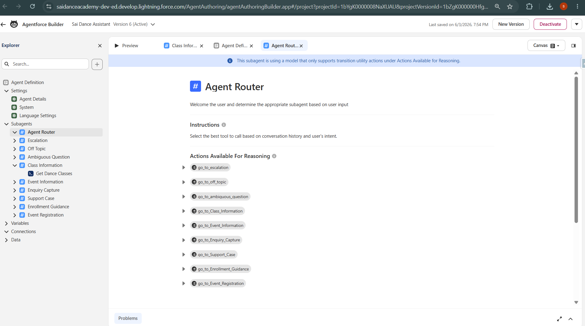
Agentforce Builder — agent overview, subagents listed
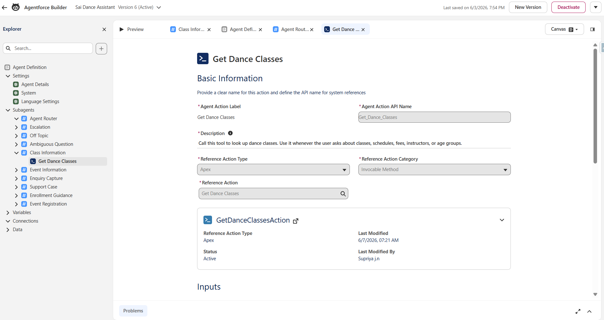
Class Information subagent — wired to live Apex query action
How it fits the wider project
Architecture — The Agent Reuses Everything
The most important architectural point: the agent doesn't have its own data layer. It queries the same custom objects the website displays, and its record-creation actions trigger the same automation the website uses.
- Live data grounding — the agent queries
Dance_Class__candEvent__c— the same records the website catalogue displays. When a class is added or updated in the org, both the website and the agent reflect it instantly - Shared automation — the agent's Case creation triggers the same record-triggered Flow that maps Case Reason to Priority and engages the existing Entitlement/Milestone SLA. The agent inherits the full Service Cloud setup for free
- Responsible handoff for payment — the agent links to the website's enrollment/RSVP flows (Stripe) rather than attempting payment in chat. Payment is handled on the proper paid path
The reliable build pattern
Actions First, Agent Second
The single most reliable pattern for building Agentforce: build and test every action independently before wiring it into the agent. This isolates "does the action work" from "does the agent call it correctly" — and when the agent later throws a generic runtime error, prior verification proves where the problem isn't.
Apex actions — for querying and formatting data
Two Apex @InvocableMethod classes were built as query actions:
GetDanceClassesAction— returns active classes with an optional style filter, formatted as a readable stringGetUpcomingEventsAction— returns active, non-past events
⚠️ One @InvocableMethod per Apex class
Salesforce only allows one @InvocableMethod per Apex class. If you try to put two in the same class, the second one is ignored or throws a compile error. Each action must be its own class. This catches people out regularly.
Both actions were tested in Developer Console → Execute Anonymous before touching the agent. This step matters more than it sounds — when the agent later threw a generic runtime error, I could immediately rule out the Apex and focus on the agent configuration.
⚠️ Field API names lie — always verify in Object Manager
Dance_Class__c uses IsActive__c (no underscore between Is and Active), while Event__c uses Is_Active__c (with underscore). They're on different objects built at different times. Field API names across objects are inconsistent — always confirm in Object Manager, never assume from the label or from another object's pattern.
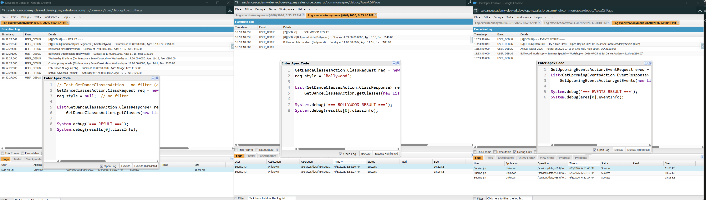
GetDanceClassesAction — tested in Execute Anonymous before agent wiring
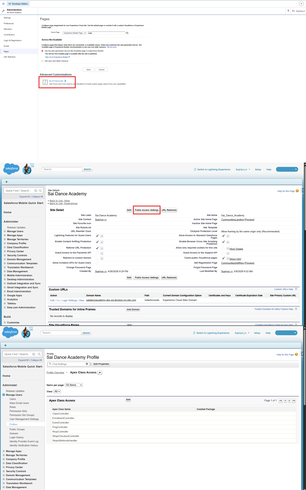
Dedicated permission set for the EinsteinServiceAgent User
Flow actions — for creating records
Two Autolaunched Flows handle record creation — not Apex:
Agent_Create_Lead— creates a Lead from an enquiry; Source set to "Agentforce Assistant"Agent_Create_Case— creates a Case; the existing priority Flow then sets Urgent/Standard/General by Reason automatically
💡 Why Flows for creation, Apex for queries?
Flows are declarative, need no test class, and are the recommended pattern for record creation in Agentforce. Apex is better for querying and formatting results into readable text. Using both tools deliberately — each for what it does best — is stronger than forcing everything into one tool. It's also a good talking point in an interview: "query and format with Apex, create records with Flow."
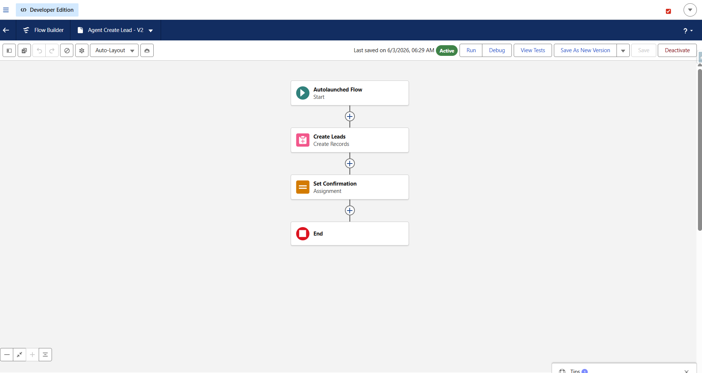
Agent_Create_Lead Flow — required fields set, Source = Agentforce Assistant
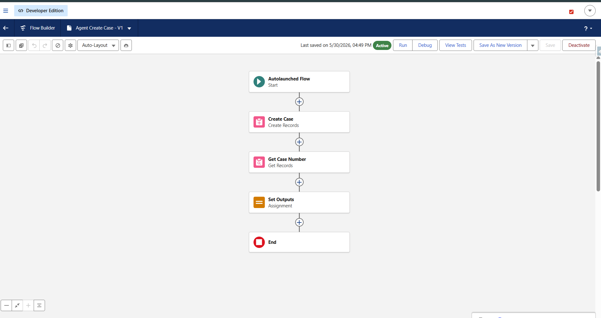
Agent_Create_Case Flow — triggers existing priority and SLA automation
⚠️ Two Flow gotchas worth remembering
Required fields must be set in the Flow or it throws a generic UNKNOWN_EXCEPTION. On Lead that meant Company, Status, and CurrencyIsoCode — fields that silently block creation without a clear error. Check every required field on the object in Setup before assuming the Flow logic is wrong.
API name vs label confusion on Case: the fields labeled "Name" and "Email Address" have API names SuppliedName and SuppliedEmail. The label tells you nothing about the API name — always verify in Object Manager.
Permissions — the silent failure source
The agent runs as a dedicated EinsteinServiceAgent User. That user must be granted explicit access to everything the actions touch, or they fail silently with a generic error. A dedicated permission set (Agent Apex Actions) was created and assigned, granting Apex Class Access to both action classes and object-level access (Read on Dance_Class__c and Event__c; Create on Lead and Case).
This is the same multi-layer access discipline that guest users need — applied to the agent's running user. Miss it and the agent returns a generic failure with no indication of what's actually missing.
The syntax that actually works
Agent Script — Structure, Gotchas, and the Canvas Picker
The new Agentforce Builder uses Agent Script — a human-readable language edited in Canvas view (visual blocks) or Script view (raw text). Both stay in sync. The single most reliable way to wire an action is the Canvas @ Resource Picker — type @ and select from the list rather than hand-writing the action reference. It generates the correct syntax for your org's exact API names, which is much safer than typing from memory.
The structure that works for a data-backed subagent
A data-backed subagent needs two action blocks: a definition at the subagent level and an exposure inside reasoning:
subagent Class_Information:
label: "Class Information"
description: |
Helps visitors find and learn about dance classes.
reasoning:
instructions: ->
| When the user asks about classes, use the Get_Dance_Classes tool.
Answer strictly based on the information returned by the tool.
# Never invent class details not returned by the tool
actions: # EXPOSURE — tool for the LLM
Get_Dance_Classes: @actions.Get_Dance_Classes
with style = ... # ... = LLM slot-fills from conversation
actions: # DEFINITION — the action itself
Get_Dance_Classes:
label: "Get Dance Classes"
description: "Call this to look up active dance classes"
target: "apex://GetDanceClassesAction" # apex:// for Apex
inputs:
style: string
is_required: False
outputs:
classInfo: string
is_displayable: True⚠️ Agent Script gotchas — learned the hard way
Input names must exactly match the Apex @InvocableVariable names — style not dance_style. A mismatch causes silent failure.
Target format: apex://DeveloperName for Apex classes, flow://DeveloperName for Flows.
Indentation is significant. Booleans are capitalized: True/False.
Always verify the router transition to each subagent. The router auto-adds a go_to_SubagentName transition per subagent — if it's missing, routing silently fails and the agent never delegates to that subagent.
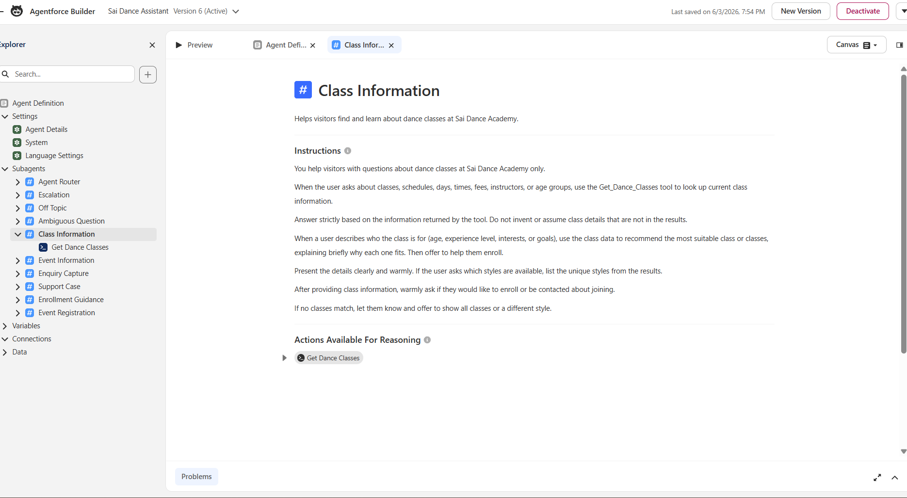
Canvas view — action wired via @ Resource Picker, not hand-written
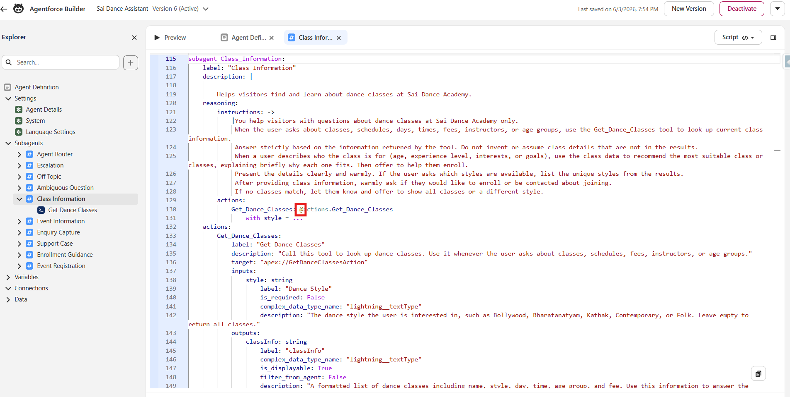
Script view — definition and exposure blocks visible
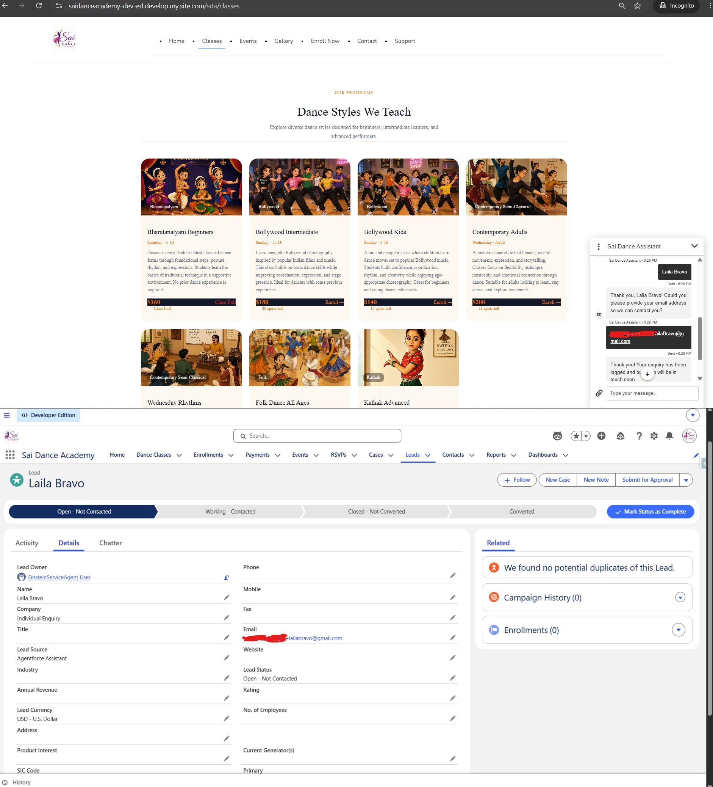
Enquiry Capture — Flow action creating a Lead
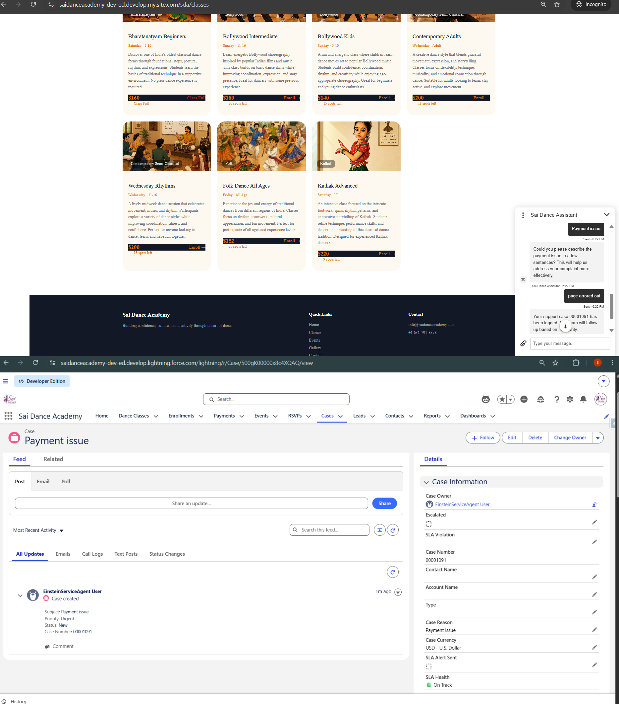
Support Case — Flow action creating a Case with SLA
The most important lesson of the build
Guardrails, Grounding, and the Hallucination Incident
Three layers keep the agent accurate and in scope:
- Scope: a global system instruction limits the agent to Sai Dance Academy topics; the standard Off Topic subagent politely redirects anything unrelated
- Grounding: every data subagent is instructed to answer strictly from the tool's results and never invent details
- Einstein Trust Layer: handles toxicity filtering and prompt-injection defense automatically, and masks URLs by default (more on this in section 6)
🚨 The hallucination incident — the most important lesson of this build
When instructions were accidentally left unsaved after an edit, the agent ran without its grounding constraints. It immediately began confidently inventing fake "batch timings" that didn't exist anywhere in the data — specific-sounding times and schedules, completely fabricated.
The fix was firm instructions: "Never invent class times, batch timings, or schedules. Only share information returned by the tool." And confirming they actually saved — the builder doesn't always give obvious feedback that a save succeeded.
An unconstrained or misconfigured agent will confidently make things up. Tight, grounded instructions are not optional — they're the foundation of a trustworthy agent.
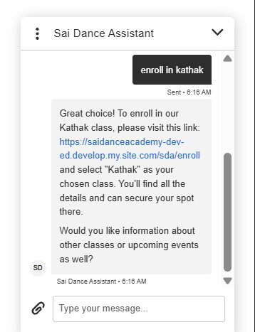
Enrollment Guidance — instructions for responsible handoff, not transaction processing
Getting it live
Deploying to a Public Experience Cloud Site — The 10-Step Chain
Deploying the agent to a live public site is a multi-step infrastructure chain. Order matters — each step references the previous one. Missing a step means the widget loads but never responds, with no obvious error.
yoursite.develop.my.site.com, no https://, no path segment. A single character mismatch means recreating the entire channel. Copy it from the browser, don't type it.https:// this time) and enable the required CSP directives so the chat widget can load on the page.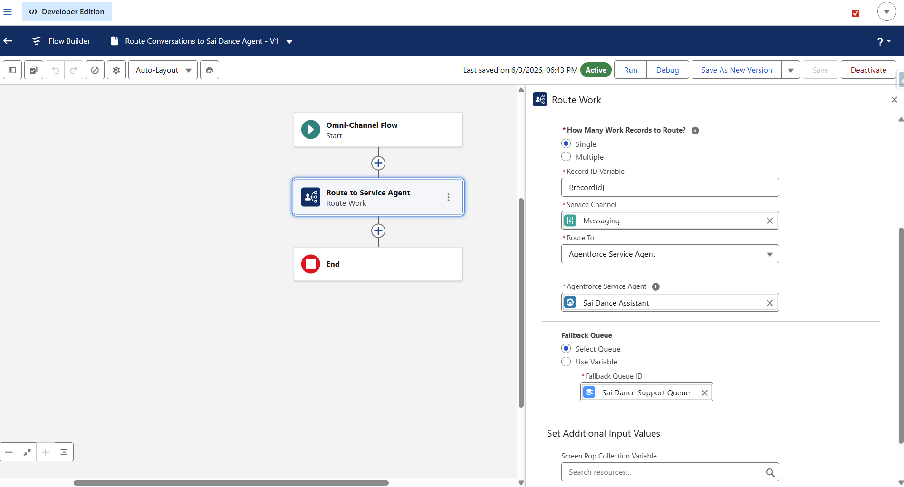
Omni-Channel Flow — Route Work element pointing to the Agentforce agent
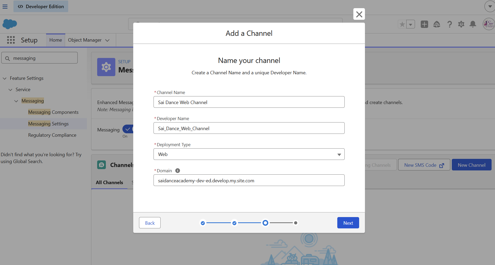
Messaging Channel — bare host domain, no https:// prefix
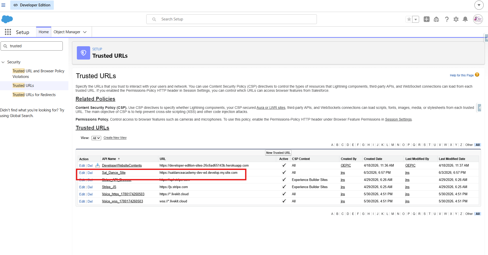
Trusted URLs — site domain allowlisted with CSP directives enabled
Two findings about the chat UX
URL Redaction and the Rich Button Reality
Two things about the chat experience are worth documenting explicitly — neither is obvious from the documentation.
The Trust Layer redacts URLs by default
The Einstein Trust Layer masks URLs the agent tries to output, replacing them with "URL_Redacted" — unless the URL is explicitly allowlisted in Trusted URLs. Without allowlisting, the agent can't share the enrollment link and instead says something vague like "use the menu to enroll." Allowlisting the site domain fixes this and lets the agent share a real, clickable enrollment link.
Rich buttons aren't available on Experience Cloud sites
💡 Worth knowing before you start
Adaptive Response Formats — the easy way to get clickable button cards in the chat UI — are not supported on Experience Cloud sites. They work in Service Cloud and other surfaces, but not in the Embedded Messaging component on an LWR site. Getting true rich cards on Experience Cloud requires Custom Lightning Types (LWC + Apex + frontend), which is a significant build. For an MVP, an allowlisted clickable link is the pragmatic, high-value choice. Know this before promising rich UI in a demo.
The Agent Live

Live — agent recommending a class from real org data

Live — agent creating a Case, visible in org immediately
Lessons Checklist
- Test actions in isolation first — Developer Console for Apex — before blaming the agent
- One
@InvocableMethodper Apex class — no exceptions - Field API names differ across objects — always verify in Object Manager
- Flows need required fields set — generic UNKNOWN_EXCEPTION usually means a missing required field
- The agent user (EinsteinServiceAgent User) needs explicit permissions via a dedicated permission set
- Wire actions via the Canvas @ picker — correct syntax, matches your org's exact API names
- Input names in the script must exactly match Apex @InvocableVariable names
- Target format:
apex://ClassNamefor Apex,flow://FlowDeveloperNamefor Flows - Always verify the router transition to each subagent — missing transitions mean silent routing failure
- Ground every instruction and confirm it saves — an unsaved or unconstrained agent hallucinates
- Enter the deployment domain exactly — bare host, no https://, no path — copy don't type
- Allowlist URLs in Trusted URLs or the Trust Layer redacts them
- Rich buttons (Adaptive Response Formats) aren't available on Experience Cloud — use allowlisted links or Custom Lightning Types
- Only create records where no downstream page will — avoids duplicates and orphaned records
- Agent must be Active (not Draft) for the deployed widget to respond
- Always test in incognito — not authenticated Experience Builder preview
Try the live agent
The agent is live on the public site — open the chat widget, ask about classes, try a recommendation, or raise a support issue. No login required.
Agentforce Builder · Agent Script · @InvocableMethod · Autolaunched Flows · Omni-Channel · Experience Cloud (LWR) · Einstein Trust Layer